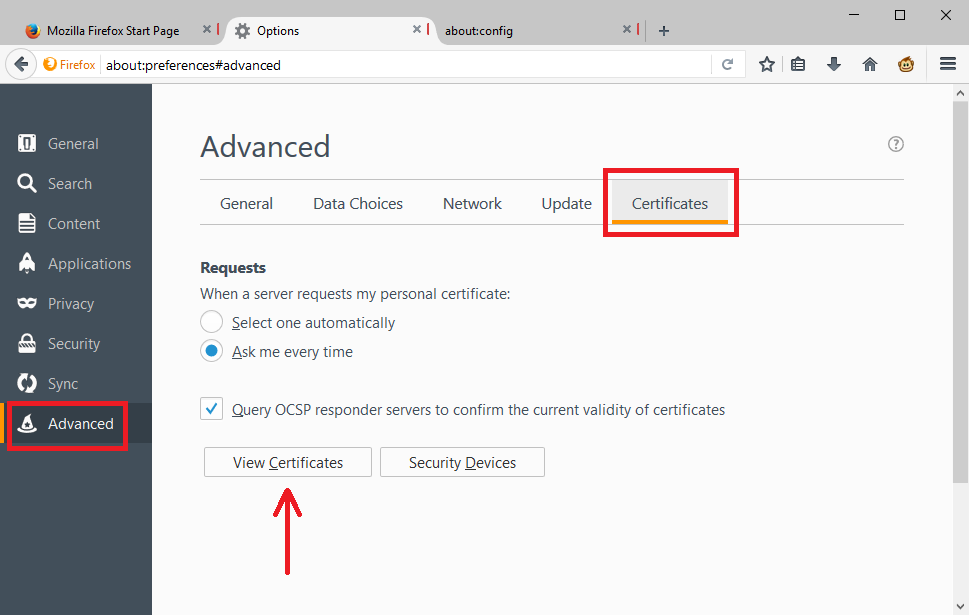
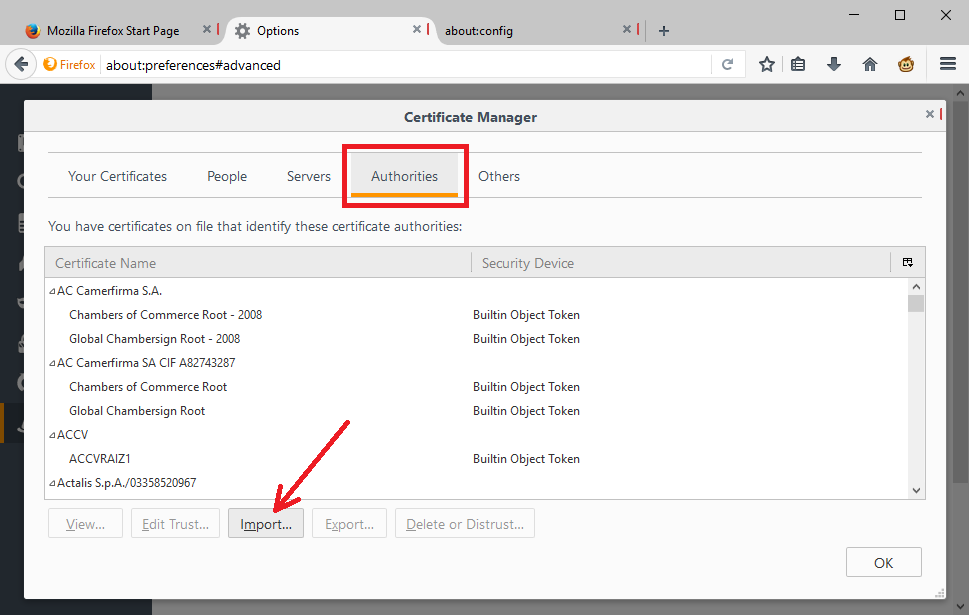
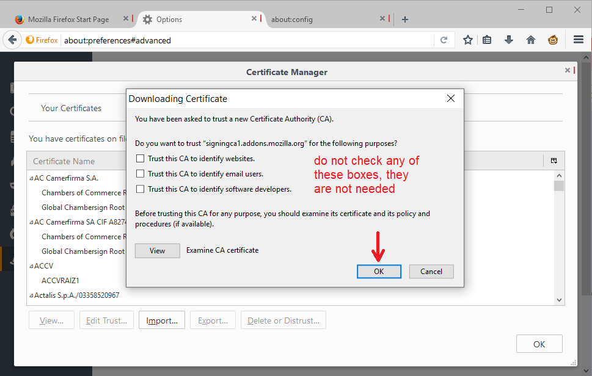
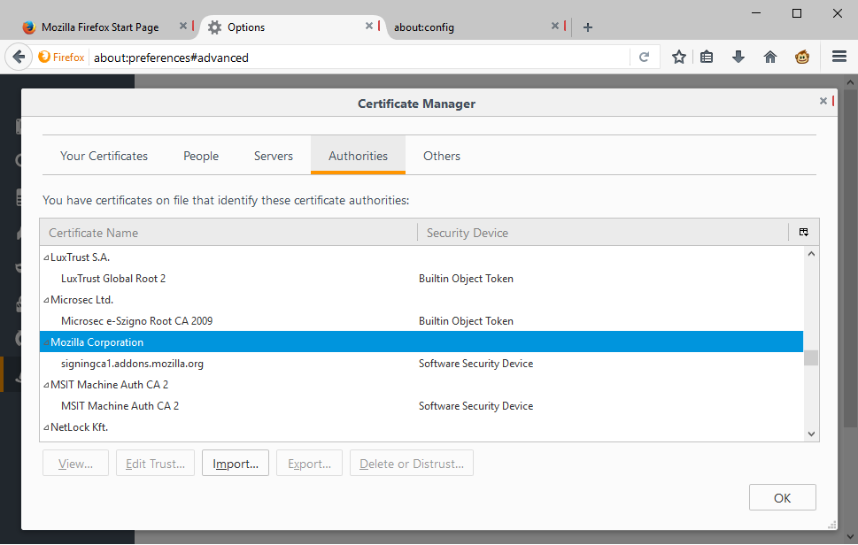
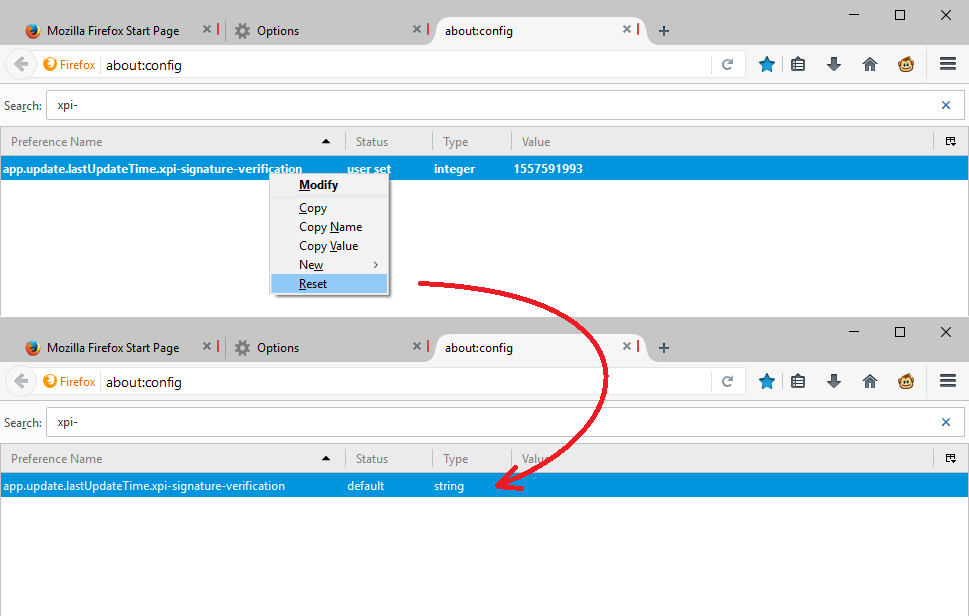

Most extensions released before May 2019 were signed with a certificate that expired on May 4, 2019. In order for Firefox to use or install an extension with one of the old signatures, it needs a new certificate installed. This is my latest information about how to get that certificate installed as of May 14, 2019. The process is not foolproof; in some number of cases, additional steps may be needed as noted in the Troubleshooting section below.
Currently Supported Versions of Firefox
Firefox 66 users can update to Firefox 66.0.5, and Firefox 60 Extended Support Release users can update to Firefox 60.6.3esr. See: Update Firefox to the latest release (on Mozilla Support). If you install Firefox via a repository mananged by your Linux distribution, your update path may be different. On Android, you can update through Google Play.
Other Versions of Firefox
For security reasons, it is recommended to run a current release (Regular, ESR). However, Mozilla understands that not all users are up-to-date and has built extensions to add the certificate to a range of those versions. As of this writing, those are not yet available on the Add-ons site; they are still in QA. You can install the current versions from Bugzilla, Mozilla's bug tracking system, to test them out.
Firefox 61 - 65
The hotfix extension can be found on the Add-ons site: Disabled Add-on Fix for Firefox 61 - 65 by Mozilla. After installation, the extension should immediately add the necessary certificate and remove the verification error from validly signed extensions.
Firefox 57 - 60 (not including Firefox 60 ESR)
The hotfix extension can be found on the Add-ons site: Disabled Add-on Fix for Firefox 57 - 60 by Mozilla. After installation, the extension should immediately add the necessary certificate and remove the verification error from validly signed extensions.
Firefox 47 - 56
The hotfix extension can be found on the Add-ons site: Disabled Add-on Fix for Firefox 47 - 56 by Mozilla. After installation, the extension should immediately add the necessary certificate and remove the verification error from validly signed extensions.
Manual Import Method
If a hotfix is not available for your version, you really should update!! The workaround for earlier versions of Firefox, or if the hotfix won't run, continues to be importing the certificate manually, and then triggering a signature reverification.
Step #1: Download the certificate. You can download the file from one of Mozilla's development servers:
https://hg.mozilla.org/releases/mozilla-release/raw-file/tip/security/apps/addons-public-intermediate.crt.
Step #2: Import the certificate. You do this on the Options/Preferences page. You can open that using any of these methods:
- Windows: "3-bar" menu button (or Tools menu) > Options
- Mac: "3-bar" menu button (or Firefox menu) > Preferences
- Linux: "3-bar" menu button (or Edit menu) > Preferences
- Any system: type or paste about:preferences into the address bar and press Enter/Return to load it
In the left column, click Advanced, then on the right side click Certificates. You should see a View Certificates button:

Click the View Certificates button to launch the Certificate Manager. In the Certificate Manager, click the Authorities tab, and you should see an Import button:

Click the Import button and point Firefox to the .crt file you downloaded and Open that. Then Firefox should present a dialog with choices for the certificate. Do not check any of the boxes, simply click the OK button.

After importing, the certificate should appear in the Authorities list under Mozilla corporation. You can click OK to close the Certificate Manager.

Step #3: Clear the timestamp for the last signature verification. This will set up Firefox up to re-check your extensions much sooner than it otherwise would check.
(A) In a new tab, type or paste about:config in the address bar and press Enter/Return. Click the button promising to be careful or accepting the risk.
(B) In the search box above the list, type or paste xpi- and pause while the list is filtered
(C) Right-click the app.update.lastUpdateTime.xpi-signature-verification preference and click Reset on the context menu
This screenshot illustrates before and after:

Step #4: Exit/Quit Firefox and start it up again. Within about a minute, Firefox should perform a fresh signature verification with the new certificate and re-enable all of the validly signed extensions.
Troubleshooting
The latest hotfixes should not suffer from the problems of the first one released over the weekend of May 4-5. However, there still could be issues in some cases.
New Version or Hotfix Does Not Install Certificate
Please refer to this thread on Mozilla Support for suggestions: Version 66.0.5 installed but still won't verify and install add-ons and themes.
Some Extensions Were Re-Enabled, Some Were Not
You can check for extension updates.
Hotfix Suddenly Stopped Working
Firefox saves the new certificate into a specific file in your currently active profile folder (cert8.db or cert9.db). If that file is removed, or if you have more than one profile, the fix will need to be applied again.